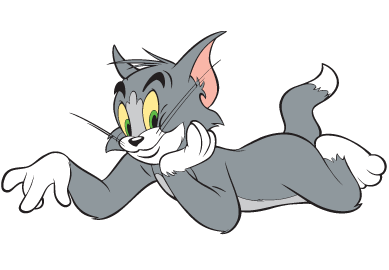

Tom and Jerry is an American animated series of comedy short films created in 1940 by William Hanna and Joseph Barbera. It centers on a rivalry between the title characters Tom, a cat, and Jerry, a mouse. Many shorts also feature several recurring characters.
In its original run, Hanna and Barbera produced 114 Tom and Jerry shorts for Metro-Goldwyn-Mayer from 1940 to 1958. During this time, they won seven Academy Awards for Animated Short Film, tying for first place with Walt Disney's Silly Symphonies with the most awards in the category. After the MGM cartoon studio closed in 1957, MGM revived the series with Gene Deitch directing an additional 13 Tom and Jerry shorts for Rembrandt Films from 1961 to 1962. Tom and Jerry then became the highest-grossing animated short film series of that time, overtaking Looney Tunes. Chuck Jones then produced another 34 shorts with Sib Tower 12 Productions between 1963 and 1967. Three more shorts were produced, The Mansion Cat in 2001, The Karate Guard in 2005, and A Fundraising Adventure in 2014, making a total of 164 shorts.
A number of spin-offs have been made, including the television series The Tom and Jerry Show (1975), The Tom and Jerry Comedy Show (1980–82), Tom and Jerry Kids (1990–93), Tom and Jerry Tales (2006–08), and The Tom and Jerry Show (2014–present). The first feature-length film based on the series, Tom and Jerry: The Movie, was released in 1992, and 13 direct-to-video films have been produced since 2002.
Characters
Tom

Thomas "Tom" Cat is a fictional character and one of the title characters (the other being Jerry Mouse) in Metro-Goldwyn-Mayer's series of Tom and Jerry theatrical animated short films. Created by William Hanna and Joseph Barbera, Tom is a grey and white anthropomorphic domestic short haired Tuxedo cat who first appeared in the 1940 MGM animated short Puss Gets the Boot. Tom was known as "Jasper" during his debut in the short; however, beginning with his next appearance in The Midnight Snack he was known as "Tom" or "Thomas".
Jerry
Jerry Mouse is a fictional character and one of the title characters (the other being Tom Cat) in Metro-Goldwyn-Mayer's series of Tom and Jerry theatrical cartoon short films. Created by William Hanna and Joseph Barbera, Jerry is a brown anthropomorphic house mouse, who first appeared as a mouse named Jinx in the 1940 MGM animated short Puss Gets the Boot. Hanna gave the mouse's original name as "Jinx", while Barbera claimed the mouse went unnamed in his first appearance.
Showcase
Movie Series
#
Title
Release Date
1
Tom and Jerry: The Movie
July 30, 1993
2
Tom and Jerry: The Magic Ring
March 12, 2002
3
Tom and Jerry: Blast Off to Mars
January 18, 2005
4
Tom and Jerry: The Fast and the Furry
October 11, 2005
5
Tom and Jerry: Shiver Me Whiskers
August 22, 2006
6
Tom and Jerry: A Nutcracker Tale
October 2, 2007
7
Tom and Jerry Meet Sherlock Holmes
August 24, 2010
8
Tom and Jerry and The Wizard of Oz
August 23, 2011
9
Tom and Jerry: Robin Hood and His Merry Mouse
September 28, 2012
10
Tom and Jerry's Giant Adventure
August 6, 2013
11
Tom and Jerry: The Lost Dragon
September 2, 2014
12
Tom and Jerry: Spy Quest
June 23, 2015
13
Tom and Jerry: Back to Oz
June 21, 2016
14
Tom and Jerry: Willy Wonka and the Chocolate Factory